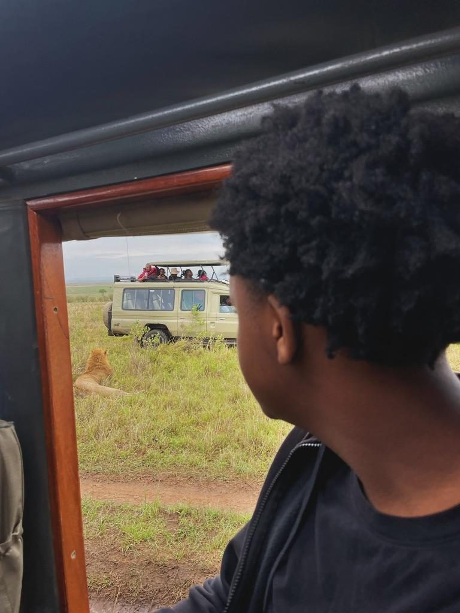
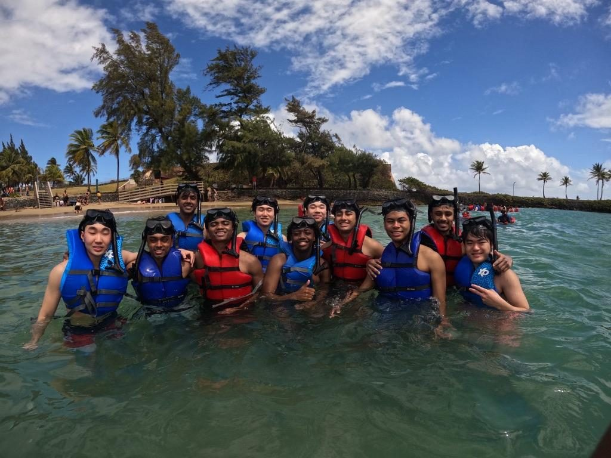
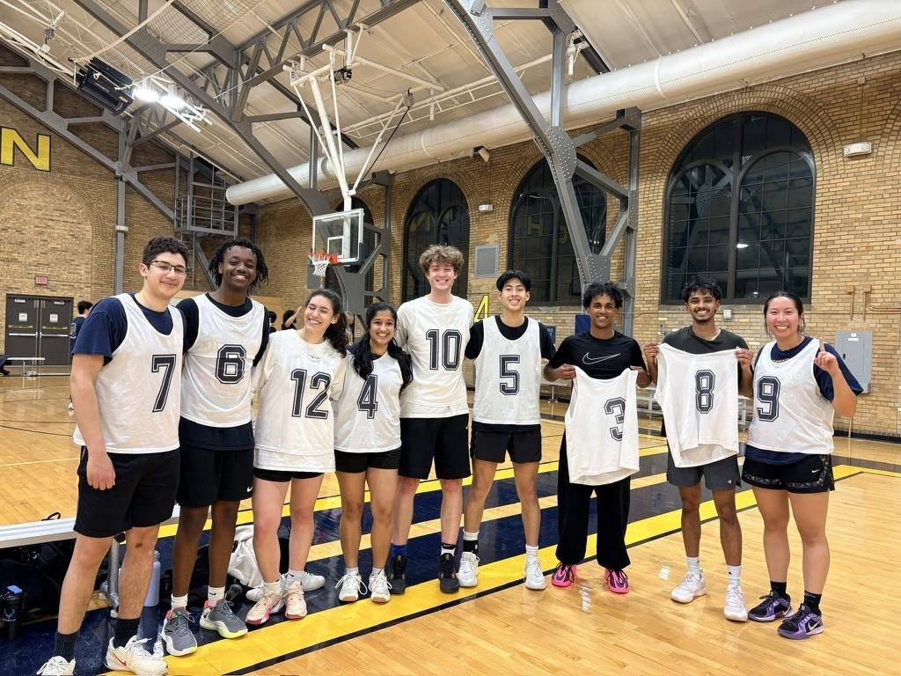
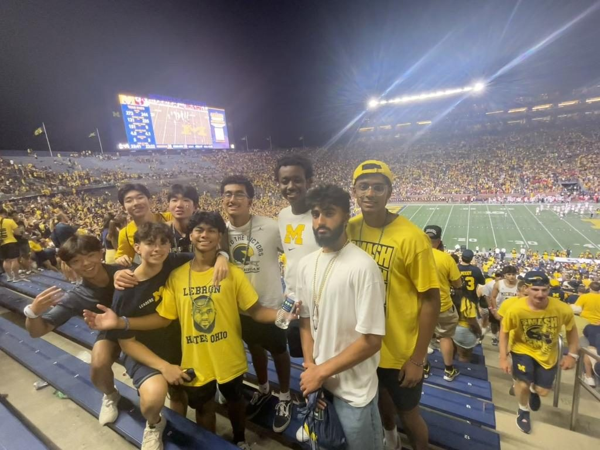
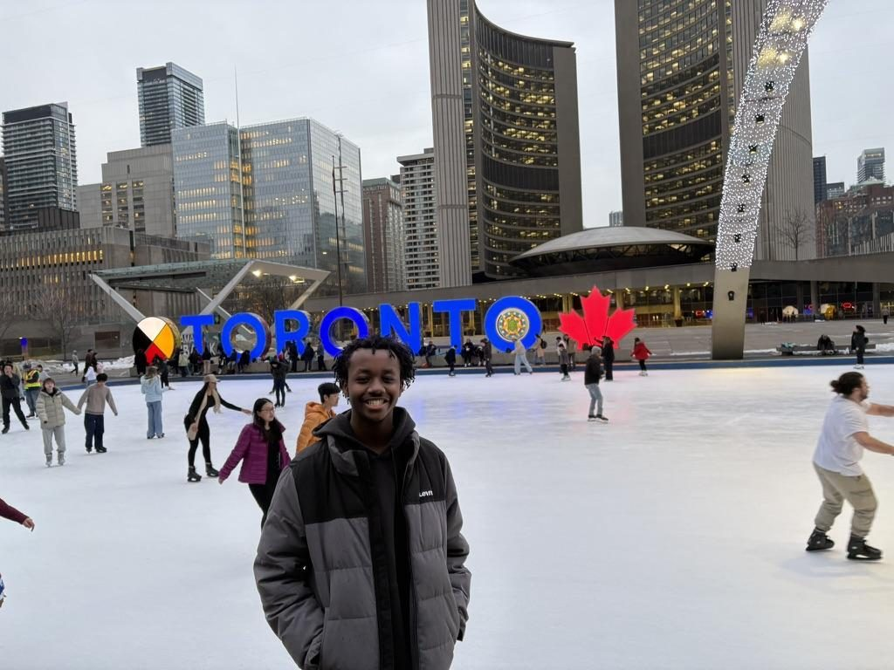
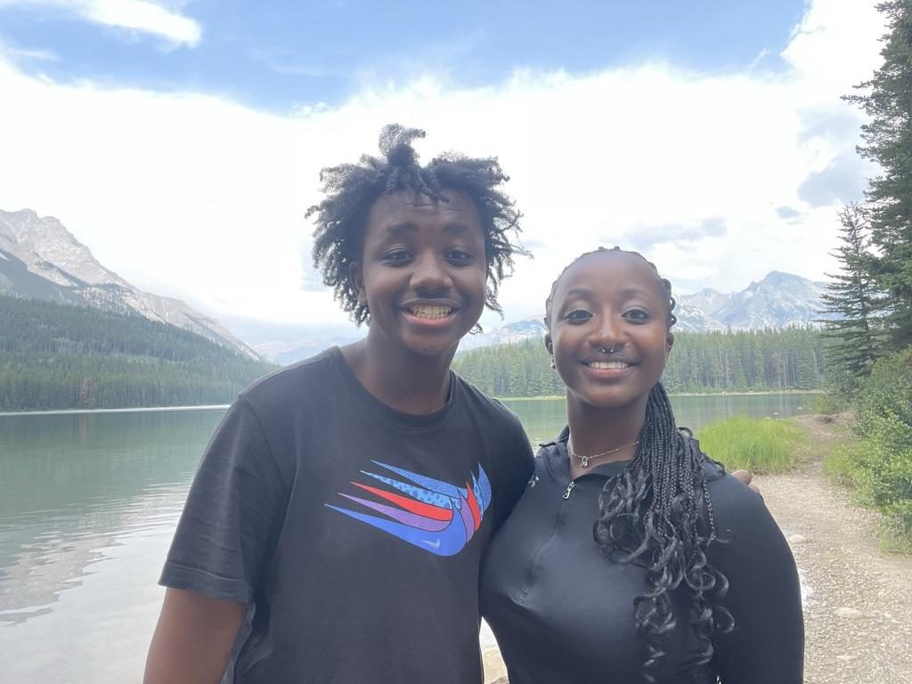
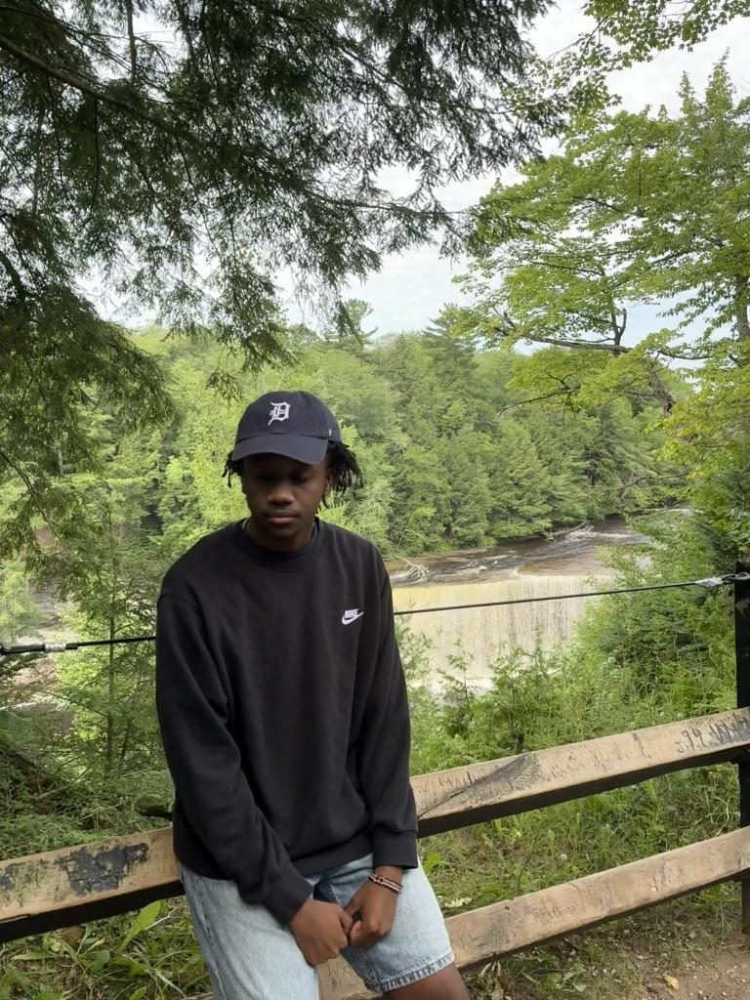
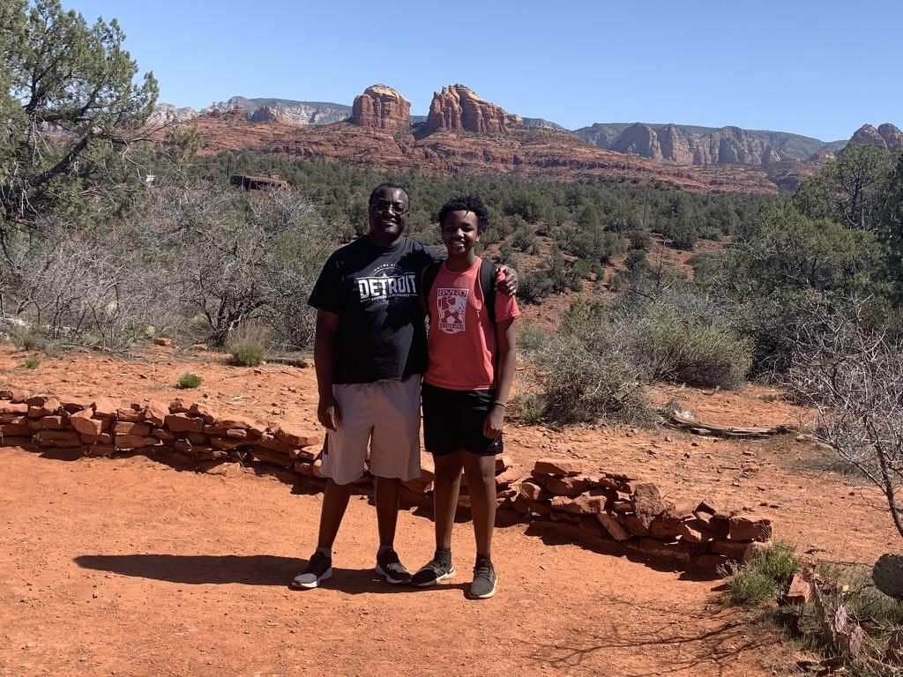
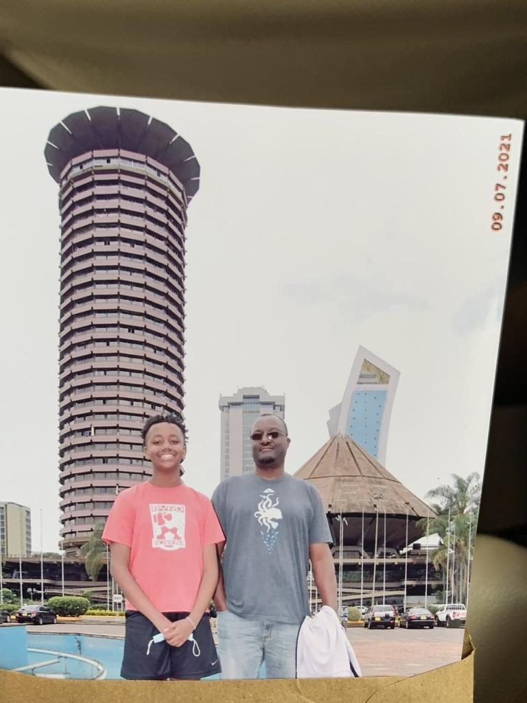

The stuff that actually makes me me — where I'm from, what I'm into, and what I'd happily talk your ear off about.
Born and raised in Metro Detroit — Southfield, then Troy. My parents and extended family are from Kenya, and my Kenyan-American identity runs through everything I do.
Proud Kenyan-American. I co-founded the East African Students Association, cook Kenyan food I taught myself in college, and I'm currently teaching myself Kikuyu, my native tribal language.
Pass-first point guard (Chris Paul is the blueprint) and a defensive mid in futsal (Sergio Busquets fan). Intramural basketball champion, Spring 2026.
Die-hard Detroit Pistons and Lions fan, and I back Arsenal in the Premier League.
Building a vinyl collection (~35 records and counting) and I do some light DJing — mostly afrobeats, hip-hop, and R&B. I've also got a Topster's worth of albums I'll defend.
Sucker for psychological thrillers and sci-fi: Arrival, Parasite, Interstellar, Prisoners, Oldboy, The Prestige, No Country for Old Men. The list is long.
Every Malcolm Gladwell book — especially Outliers, David and Goliath, and The Tipping Point.
Thrifting most of my closet from Salvation Army, Goodwill, and local spots. I also write down my dreams, and I always loop one song on repeat while I work.
Teaching myself Kikuyu and building data-science side projects around sports statistics.
Education policy, ESG, childcare access, accessible healthcare, urban development, and racial justice.








